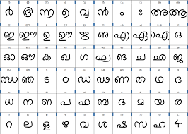

TLDR: Kurian has committed to start an open-source project for Text classification tasks in Malayalam which is going to build as an open-source project under SMC community.
Why I am starting this project?
I have been doing the fastai course since 2018. Yet I have been taking it seriously probably, only after I bought the book Deep Learning for Coders with FastAI & Pytorch almost one year back. This year I took the fastai v5 course, and I feel it’s time to follow a piece of advice which I have heard multiple times.
Important: Jeremy Howard, who is teaching this course and wrote the book prompts you to take what you learned and apply it to something that has meaning for you. (This is something that most of those who’ve found any success with the course emphasise repeatedly.)
Problem Domain
According to huggingface tasks page:
Text Classification is the task of assigning a label or class to a given text. Some use cases are sentiment analysis, natural language inference, and assessing grammatical correctness.
Malayalam is a highly inflectional and agglutinative language compared to other languages. The quantitative complexity of Malayalam classification was explained in this paper. The computer still doesn’t seem to have understood the basic behaviour of the language to do text classification. Malayalam is a language which morphologically complex making it even more difficult.
Very few people seem to have applied techniques in deep learning in Malayalam, and it seems to be a good place to see if really deep learning techniques can be applied in my mother tongue, Malayalam. A lot of progress in other languages has happened and in general NLP, yet it’s a good time to see if it works in Indic languages like Malayalam.
Why Text classification is interesting?
I believe working on tasks like Text classification is way more difficult when we are working in low-resource languages like Malayalam. Yet when working on problems like this, you realize what are things you take for granted in the English language.
In the English language, there are plenty of labelled datasets on any problem set you to want. A lot of articles and blogs have been written on how to apply various NLP techniques in English. When it comes to Malayalam, there is just a handful of people who have tried and applied this in Malayalam.
Note to myself: Will is more important than Skill and it’s important to be tenacious here.
I believe this is here, it’s very important to believe in one’s tenacity and try out new things in a field where very less research happening, and there are no proper open datasets for researchers to work on. This is why I feel this project can be challenging, and my approach is to see if the latest transformer approaches can do something or not.
Previous work: Vaaku2Vec
The most important work in Malayalam text classification as far as I know is Vaaku2Vec project - State-of-the-Art Language Modeling and Text Classification in the Malayalam Language.
According to their Github README:
We trained a Malayalam language model on the Wikipedia article dump from Oct, 2018. The Wikipedia dump had 55k+ articles. The difficulty in training a Malayalam language model is text tokenization since Malayalam is a highly inflectional and agglutinative language. In the current model, we are using an nltk tokenizer (will try better alternative in the future) and the vocab size is 30k. The language model was used to train a classifier which classifies a news into 5 categories (India, Kerala, Sports, Business, Entertainment). Our classifier came out with a whooping 92% accuracy in the classification task.
It was revolutionary at that time, to see deep learning techniques applied to get SOTA in Malayalam. IndicNLP as an organisation did a lot of work, from working on projects like Word2vec, Vaakk2vec etc. They worked on creating a Named entity recognition dataset for Malayalam etc. They conducted Devsprints in colleges like Model Engineering college… and presented their work in Pycon India and Kochi Python. Most of the work was done by Adam Shamsudeen and Kamal K Raj.
What’s the plan for the project?
Important: Cervantes once wrote that “the journey is better than the inn”, which means that the process is more valuable than the destination.
At moment, the project doesn’t have any concrete goals and it’s just me who is working in my free time.
I have created a few issues and my next blog post will be on creating a baseline model on a private dataset that a few kind folks shared with me. I expect the dataset creation to be an iterative task. I am looking forward to blogging about what I work on and stumble upon in each stage of the project.
When I was looking for where I wanted to create this as an open-source project obviously, I choose Swathanthra Malayalam Community because:
- I feel SMC as an organization played a pivotal part in revolutionizing Malayalam computing and has a strong community presence. They have made a lot of work by creating fonts, helping in internationalization efforts, …
- People like Santhosh Thottingal and Kavya Manohar have helped me a lot in my previous failed attempt to build TTS with deep learning in Malayalam.
- Some of the open-source projects made by SMC still survive like the website of Malayalam Speech Corpus which is impressive to me.
I would like to thank the following people for all the support and motivation they have given me in starting this open-source project on this occasion: